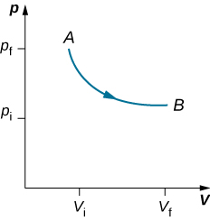
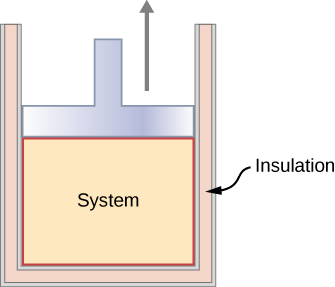
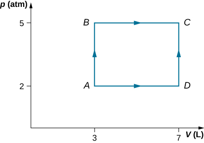

Distinguish between quasi-static and non-quasi-static processes
Calculate physical quantities, such as the heat transferred, work done, and internal energy change for isothermal, adiabatic, and cyclical thermodynamic processes
In solving mechanics problems, we isolate the body under consideration, analyze the external forces acting on it, and then use Newton’s laws to predict its behavior. In thermodynamics, we take a similar approach. We start by identifying the part of the universe we wish to study; it is also known as our system. (We defined a system at the beginning of this chapter as anything whose properties are of interest to us; it can be a single atom or the entire Earth.) Once our system is selected, we determine how the environment, or surroundings, interact with the system. Finally, with the interaction understood, we study the thermal behavior of the system with the help of the laws of thermodynamics.
The thermal behavior of a system is described in terms of thermodynamic variables. For an ideal gas, these variables are pressure, volume, temperature, and the number of molecules or moles of the gas. Different types of systems are generally characterized by different sets of variables. For example, the thermodynamic variables for a stretched rubber band are tension, length, temperature, and mass.
The state of a system can change as a result of its interaction with the environment. The change in a system can be fast or slow and large or small. The manner in which a state of a system can change from an initial state to a final state is called a thermodynamic process. For analytical purposes in thermodynamics, it is helpful to divide up processes as either quasi-static or non-quasi-static, as we now explain.
Quasi-static and Non-quasi-static Processes
A quasi-static process refers to an idealized or imagined process where the change in state is made infinitesimally slowly so that at each instant, the system can be assumed to be at a thermodynamic equilibrium with itself and with the environment. For instance, imagine heating 1 kg of water from a temperature to at a constant pressure of 1 atmosphere. To heat the water very slowly, we may imagine placing the container with water in a large bath that can be slowly heated such that the temperature of the bath can rise infinitesimally slowly from to . If we put 1 kg of water at directly into a bath at , the temperature of the water will rise rapidly to in a non-quasi-static way.
Quasi-static processes are done slowly enough that the system remains at thermodynamic equilibrium at each instant, despite the fact that the system changes over time. The thermodynamic equilibrium of the system is necessary for the system to have well-defined values of macroscopic properties such as the temperature and the pressure of the system at each instant of the process. Therefore, quasi-static processes can be shown as well-defined paths in state space of the system.
Since quasi-static processes cannot be completely realized for any finite change of the system, all processes in nature are non-quasi-static. Examples of quasi-static and non-quasi-static processes are shown in [link]. Despite the fact that all finite changes must occur essentially non-quasi-statically at some stage of the change, we can imagine performing infinitely many quasi-static process corresponding to every quasi-static process. Since quasi-static processes can be analyzed analytically, we mostly study quasi-static processes in this book. We have already seen that in a quasi-static process the work by a gas is given by pdV.
Quasi-static and non-quasi-static processes between states A and B of a gas. In a quasi-static process, the path of the process between A and B can be drawn in a state diagram since all the states that the system goes through are known. In a non-quasi-static process, the states between A and B are not known, and hence no path can be drawn. It may follow the dashed line as shown in the figure or take a very different path.
Isothermal Processes
An isothermal process is a change in the state of the system at a constant temperature. This process is accomplished by keeping the system in thermal equilibrium with a large heat bath during the process. Recall that a heat bath is an idealized “infinitely” large system whose temperature does not change. In practice, the temperature of a finite bath is controlled by either adding or removing a finite amount of energy as the case may be.
As an illustration of an isothermal process, consider a cylinder of gas with a movable piston immersed in a large water tank whose temperature is maintained constant. Since the piston is freely movable, the pressure inside is balanced by the pressure outside by some weights on the piston, as in [link].
Expanding a system at a constant temperature. Removing weights on the piston leads to an imbalance of forces on the piston, which causes the piston to move up. As the piston moves up, the temperature is lowered momentarily, which causes heat to flow from the heat bath to the system. The energy to move the piston eventually comes from the heat bath.
As weights on the piston are removed, an imbalance of forces on the piston develops. The net nonzero force on the piston would cause the piston to accelerate, resulting in an increase in volume. The expansion of the gas cools the gas to a lower temperature, which makes it possible for the heat to enter from the heat bath into the system until the temperature of the gas is reset to the temperature of the heat bath. If weights are removed in infinitesimal steps, the pressure in the system decreases infinitesimally slowly. This way, an isothermal process can be conducted quasi-statically. An isothermal line on a (p, V) diagram is represented by a curved line from starting point A to finishing point B, as seen in [link]. For an ideal gas, an isothermal process is hyperbolic, since for an ideal gas at constant temperature, .
An isothermal expansion from a state labeled A to another state labeled B on a pV diagram. The curve represents the relation between pressure and volume in an ideal gas at constant temperature.

An isothermal process studied in this chapter is quasi-statically performed, since to be isothermal throughout the change of volume, you must be able to state the temperature of the system at each step, which is possible only if the system is in thermal equilibrium continuously. The system must go out of equilibrium for the state to change, but for quasi-static processes, we imagine that the process is conducted in infinitesimal steps such that these departures from equilibrium can be made as brief and as small as we like.
Other quasi-static processes of interest for gases are isobaric and isochoric processes. An isobaric process is a process where the pressure of the system does not change, whereas an isochoric process is a process where the volume of the system does not change.
Adiabatic Processes
In an adiabatic process, the system is insulated from its environment so that although the state of the system changes, no heat is allowed to enter or leave the system, as seen in [link]. An adiabatic process can be conducted either quasi-statically or non-quasi-statically. When a system expands adiabatically, it must do work against the outside world, and therefore its energy goes down, which is reflected in the lowering of the temperature of the system. An adiabatic expansion leads to a lowering of temperature, and an adiabatic compression leads to an increase of temperature. We discuss adiabatic expansion again in Adiabatic Processes for an ideal Gas.
An insulated piston with a hot, compressed gas is released. The piston moves up, the volume expands, and the pressure and temperature decrease. The internal energy goes into work. If the expansion occurs within a time frame in which negligible heat can enter the system, then the process is called adiabatic. Ideally, during an adiabatic process no heat enters or exits the system.

Cyclic Processes
We say that a system goes through a cyclic process if the state of the system at the end is same as the state at the beginning. Therefore, state properties such as temperature, pressure, volume, and internal energy of the system do not change over a complete cycle:
When the first law of thermodynamics is applied to a cyclic process, we obtain a simple relation between heat into the system and the work done by the system over the cycle:
Thermodynamic processes are also distinguished by whether or not they are reversible. A reversible process is one that can be made to retrace its path by differential changes in the environment. Such a process must therefore also be quasi-static. Note, however, that a quasi-static process is not necessarily reversible, since there may be dissipative forces involved. For example, if friction occurred between the piston and the walls of the cylinder containing the gas, the energy lost to friction would prevent us from reproducing the original states of the system.
We considered several thermodynamic processes:
An isothermal process, during which the system’s temperature remains constant
An adiabatic process, during which no heat is transferred to or from the system
An isobaric process, during which the system’s pressure does not change
An isochoric process, during which the system’s volume does not change
Many other processes also occur that do not fit into any of these four categories.
View this site to set up your own process in a pV diagram. See if you can calculate the values predicted by the simulation for heat, work, and change in internal energy.
Summary
The thermal behavior of a system is described in terms of thermodynamic variables. For an ideal gas, these variables are pressure, volume, temperature, and number of molecules or moles of the gas.
For systems in thermodynamic equilibrium, the thermodynamic variables are related by an equation of state.
A heat reservoir is so large that when it exchanges heat with other systems, its temperature does not change.
A quasi-static process takes place so slowly that the system involved is always in thermodynamic equilibrium.
A reversible process is one that can be made to retrace its path and both the temperature and pressure are uniform throughout the system.
There are several types of thermodynamic processes, including (a) isothermal, where the system’s temperature is constant; (b) adiabatic, where no heat is exchanged by the system; (c) isobaric, where the system’s pressure is constant; and (d) isochoric, where the system’s volume is constant.
As a consequence of the first law of thermodymanics, here is a summary of the thermodymaic processes: (a) isothermal: (b) adiabatic: (c) isobaric: and (d) isochoric:
Conceptual Questions
When a gas expands isothermally, it does work. What is the source of energy needed to do this work?
The system must be in contact with a heat source that allows heat to flow into the system.
If the pressure and volume of a system are given, is the temperature always uniquely determined?
It is unlikely that a process can be isothermal unless it is a very slow process. Explain why. Is the same true for isobaric and isochoric processes? Explain your answer.
Isothermal processes must be slow to make sure that as heat is transferred, the temperature does not change. Even for isobaric and isochoric processes, the system must be in thermal equilibrium with slow changes of thermodynamic variables.
Problems
Two moles of a monatomic ideal gas at (5 MPa, 5 L) is expanded isothermally until the volume is doubled (step 1). Then it is cooled isochorically until the pressure is 1 MPa (step 2). The temperature drops in this process. The gas is now compressed isothermally until its volume is back to 5 L, but its pressure is now 2 MPa (step 3). Finally, the gas is heated isochorically to return to the initial state (step 4). (a) Draw the four processes in the pV plane. (b) Find the total work done by the gas.
Consider a transformation from point A to B in a two-step process. First, the pressure is lowered from 3 MPa at point A to a pressure of 1 MPa, while keeping the volume at 2 L by cooling the system. The state reached is labeled C. Then the system is heated at a constant pressure to reach a volume of 6 L in the state B. (a) Find the amount of work done on the ACB path. (b) Find the amount of heat exchanged by the system when it goes from A to B on the ACB path. (c) Compare the change in the internal energy when the AB process occurs adiabatically with the AB change through the two-step process on the ACB path.
a. 1660 J; b. −2730 J; c. It does not depend on the process.
Consider a cylinder with a movable piston containing n moles of an ideal gas. The entire apparatus is immersed in a constant temperature bath of temperature T kelvin. The piston is then pushed slowly so that the pressure of the gas changes quasi-statically from to at constant temperature T. Find the work done by the gas in terms of n, R, T, and
An ideal gas expands isothermally along AB and does 700 J of work (see below). (a) How much heat does the gas exchange along AB? (b) The gas then expands adiabatically along BC and does 400 J of work. When the gas returns to A along CA, it exhausts 100 J of heat to its surroundings. How much work is done on the gas along this path?
a. 700 J; b. 500 J
Consider the processes shown below for a monatomic gas. (a) Find the work done in each of the processes AB, BC, AD, and DC. (b) Find the internal energy change in processes AB and BC. (c) Find the internal energy difference between states C and A. (d) Find the total heat added in the ADC process. (e) From the information given, can you find the heat added in process AD? Why or why not?

Two moles of helium gas are placed in a cylindrical container with a piston. The gas is at room temperature and under a pressure of When the pressure from the outside is decreased while keeping the temperature the same as the room temperature, the volume of the gas doubles. (a) Find the work the external agent does on the gas in the process. (b) Find the heat exchanged by the gas and indicate whether the gas takes in or gives up heat. Assume ideal gas behavior.
a. −3 400 J; b. 3400 J enters the gas
An amount of n moles of a monatomic ideal gas in a conducting container with a movable piston is placed in a large thermal heat bath at temperature and the gas is allowed to come to equilibrium. After the equilibrium is reached, the pressure on the piston is lowered so that the gas expands at constant temperature. The process is continued quasi-statically until the final pressure is 4/3 of the initial pressure (a) Find the change in the internal energy of the gas. (b) Find the work done by the gas. (c) Find the heat exchanged by the gas, and indicate, whether the gas takes in or gives up heat.
Glossary
adiabatic process
process during which no heat is transferred to or from the system
cyclic process
process in which the state of the system at the end is same as the state at the beginning
isobaric process
process during which the system’s pressure does not change
isochoric process
process during which the system’s volume does not change
isothermal process
process during which the system’s temperature remains constant
reversible process
process that can be reverted to restore both the system and its environment back to their original states together
thermodynamic process
manner in which a state of a system can change from initial state to final state
![The figure is a plot of pressure, p, on the vertical axis as a function of volume, V, on the horizontal axis. Two pressures, p f greater than p i, are marked on the vertical axis. Two volumes, V f greater than V i are marked on the horizontal axis. Two points, A at V i, p i, and B at the final V f, p i, are shown and are connected by a straight horizontal line with a rightward arrow from A to B. The line is labeled Quasi-static process. A dashed line goes up from A, curves to reach a maximum, and curves back down to B. This dashed line is labeled nonquasi-static process.](CNX_UPhysics_20_04_Quasi.jpg)
![The figure illustrates a large insulated container filled with fluid. This fluid is labeled as the constant T heat bath. Inside the heat bath is a smaller container filled with gas. The smaller gas container is capped by a piston that has weights on top of it. The inside of the smaller container is the system. A double headed arrow across the smaller container’s walls labeled “heat” indicates that heat can flow between the bath and the system. An upward arrow inside the system points up at the bottom of the piston and is labeled p in. A downward arrow outside the system points down at the top of the piston and is labeled p out. A second downward arrow points at the top of the piston where the weights are stacked.](CNX_UPhysics_20_04_Piston.jpg)
![The figure is a plot of pressure, p, on the vertical axis as a function of volume, V, on the horizontal axis. Three Points, A, B, C, and D are labeled. Point A is at the smallest volume and highest pressure. Point C is at the largest volume and lowest pressure. Point B is at an intermediate pressure and volume, but above the A C line. A path from A to B, to C, and back to A is shown. The path leaves A, goes down but with decreasing slope to reach B. It leaves B and descends steeply to C. It then curves back up to A. All the curves are concave up.](CNX_UPhysics_20_03_SMP2020_img.jpg)